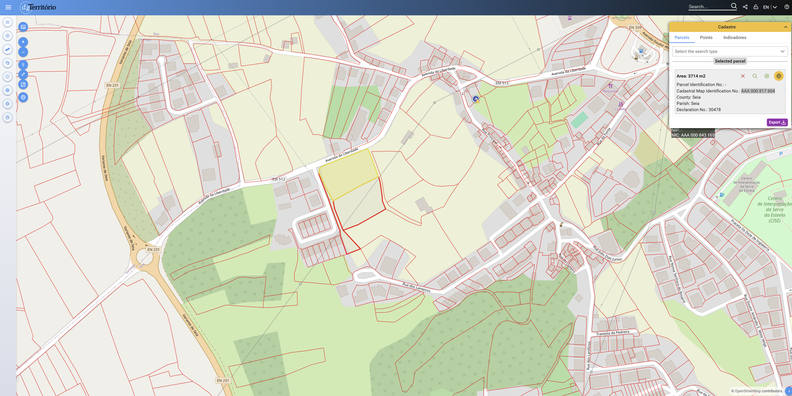
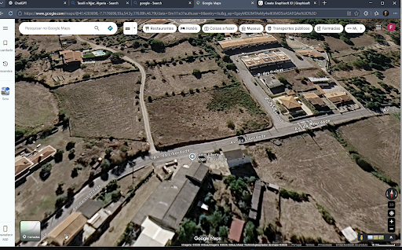

Exercício 3 — Seia / Enquadramento Técnico e Legal Unidade Curricular: Inteligência Artificial Aplicada à Arquitectura
Autoria (Grupo 9)
Objetivo Editorial
Compilação e retificação integral do enquadramento legal e regulamentar para a parcela de Seia, articulando o PDM de Seia, REU de Seia (Reg. n.º 306/2011), RJUE, RGEU, DL n.º 163/2006 e DL n.º 101-D/2020 com DL n.º 11/2025.
Metodologia
Adopção das 6 tabelas normativas e técnicas atualizadas como fonte única de verdade, assegurando total rastreabilidade das citações, artigos e valores regulamentares.
2. Caracterização da Parcela Localização, dados cadastrais e registos visuais
| Localização / Arruamentos | Av. da Liberdade / Rua Salgueiros, Seia |
|---|---|
| Coordenadas Geográficas | 40.419338, -7.717701 |
| Área da Parcela | 3 714,00 m² |
| Cadastro Georreferenciado | AAA 000 817 604 (Declaração n.º 30478) |
| Classificação PDM | Solo Urbano (Solo Urbanizado) — Espaços Residenciais |
| Uso Pretendido | Moradia unifamiliar de 2 pisos |
| Data da Consulta Legal | 29 de outubro de 2026 |

Planta Cadastral Georreferenciada
Fonte: DGT / dgTerritório (Cadastro AAA 000 817 604 - 3714 m²).

Vista Aérea e Enquadramento Urbano
Fonte: Google Maps / Google Earth (Av. da Liberdade / Rua Salgueiros).
3. Tabelas Técnicas e Regulamentares Fonte de Verdade Atualizada de Seia
Tabela 1: Parâmetros Urbanísticos e Regime do Solo (PDM de Seia + REU de Seia)
| Item | Exigência (diploma + artigo/secção) | Valor ou critério (SI) | Citação literal (máx. 30 palavras) | Efeito na parcela / condição para o projeto | Data de consulta |
|---|---|---|---|---|---|
| 1. Categoria de solo e usos compatíveis | PDM de Seia (Aviso n.º 13424/2021), Art. 86.º, n.º 1 e Art. 87.º, n.º 1, 2 | Solo Urbano (Solo Urbanizado) — Espaços Residenciais. Uso dominante: habitação unifamiliar. Usos compatíveis: comércio, serviços e turismo. | «assumem correspondência com os solos que apresentam como destino dominante a fixação de funções de cariz residencial, nelas podendo ser admitidos outras tipologias de usos, desde que compatíveis» | Moradia unifamiliar diretamente permitida como uso dominante no terreno. | 29/10/2026 |
| 2. Índice de utilização e área de construção máxima | PDM de Seia (Aviso n.º 13424/2021), Art. 80.º, n.º 1 (Quadro) | I_u ≤ 0,8 ⟹ Área de construção máxima (A_c) = 0,8 × 3714 m² = 2971,2 m². | «Espaços residenciais ... Habitação unifamiliar ... Índice máximo de utilização do solo: ≤ 0,8» | A área bruta de construção acumulada para a habitação não pode ultrapassar 2971,2 m². | 29/10/2026 |
| 3. Cércea / altura máxima e número de pisos | PDM de Seia, Art. 80.º, n.º 1 e REU de Seia (Reg. n.º 306/2011), Art. 60.º, n.º 2 | Edifício principal: N.º máximo de pisos acima da soleira = 2. Anexos/construções auxiliares: 1 piso, cércea ≤ 2,50 m (cobertura plana) ou beirado ≤ 2,50 m e cumeeira ≤ 3,50 m (cobertura inclinada). | «Número máximo de pisos acima da cota de soleira: 2 ... Ter uma cércea não superior a 2,50 m, no caso de possuir cobertura plana ... beirado não superior a 2,50 m» | Moradia limitada a 2 pisos. Anexos de apoio/garagem não podem ter cércea superior a 2,50 m (plana) ou 3,50 m no ponto mais alto. | 29/10/2026 |
| 4. Afastamentos mínimos e alinhamentos | PDM de Seia, Art. 80.º, n.º 3, 5, 6 e REU de Seia (Reg. n.º 306/2011), Art. 58.º, n.º 1, Art. 63.º, n.º 4 | Frontal: alinhamento dominante. Lateral: ≥ H/2 (mínimo de 3 m). Posterior: mínimo de 5 m. Varandas/balanços: pé-direito ≥ 3,00 m, balanço ≤ 50% do passeio. Muros: altura ≤ 1,80 m. | «afastamentos laterais ... igual a metade da altura, mas nunca inferior 3 metros ... garantir uma altura livre ao passeio de, pelo menos, 3,00 m» | Respeitar 3 m às divisórias laterais, 5 m ao tardoz, muros de vedação até 1,80 m e varandas com pé-direito livre ≥ 3,00 m ao passeio. | 29/10/2026 |
| 5. Implantação, impermeabilização e área permeável | PDM de Seia, Art. 80.º, n.º 1 e REU de Seia (Reg. n.º 306/2011), Art. 57.º, n.º 1 | Implantação máxima (I_o ≤ 0,4) = 1485,6 m². Impermeabilização máxima (I_imp ≤ 0,6) = 2228,4 m². Área permeável mínima do prédio ≥ 25,0% (25% × 3714 m² = 928,5 m²). Anexos ≤ 50 m². | «Índice máximo de ocupação do solo: ≤ 0,4 ... A área permeável deve ser, no mínimo, equivalente a 25,0 % da área total do prédio.» | Reservar no logradouro uma área permeável contínua e não pavimentada de pelo menos 928,5 m². Pegada do edifício principal até 1485,6 m². | 29/10/2026 |
| 6. Estacionamento mínimo exigido | PDM de Seia (Aviso n.º 13424/2021), Art. 103.º, n.º 1 (Quadro) | Habitação unifamiliar privativa: A_c < 120 m² ⟹ 1 lugar; 120 m² ≤ A_c ≤ 300 m² ⟹ 2 lugares; A_c > 300 m² ⟹ 3 lugares. | «1 lugar/fogo com área de construção 120 < m2; 2 lugares/fogo com área de construção entre 120 m2 e 300 m2; 3 lugares/fogo com área de construção > 300 m2.» | Prever no interior da parcela 1, 2 ou 3 lugares privados de garagem/estacionamento conforme a área bruta construída. | 29/10/2026 |
| 7. Condicionantes sobrepostas e acústica | PDM de Seia, Art. 6.º, 7.º, 14.º e REU de Seia (Reg. n.º 306/2011), Art. 21.º | Classificação Acústica: Zona Mista. Receptores isolados fora do perímetro equiparados a zonas mistas. Confirmação de isenção de REN/RAN/Áreas Ardidas por extrato cadastral. | «receptores sensíveis isolados não integrados em zonas classificadas por estarem fora dos perímetros urbanos, são equiparados a zonas sensíveis ou mistas» | O projeto acústico da moradia deve cumprir os requisitos de Zona Mista. A isenção de afetação a REN/RAN deve ser validada por certidão de condicionantes. | 29/10/2026 |
| 8. Servidões, Taxas e Encargos Municipais | PDM de Seia, Art. 29.º e REU de Seia (Reg. n.º 306/2011), Art. 86.º, 87.º, 91.º | Servidão rodoviária e aeronáutica (se aplicável). Sujeição à Taxa de Infraestruturas (TMU) com K1 = 0,40 e Compensação se houver dispensa de cedências. | «A taxa pela realização, manutenção e reforço de infra-estruturas urbanísticas é fixada ... K1 — perímetro urbano de Seia — 0,4» | Prever no orçamento da obra o pagamento da TMU municipal (K1 = 0,40) e eventual compensação por dispensa de cedências públicas. | 29/10/2026 |
Tabela 2: Licenciamento Urbanístico e Instrução do Processo (RJUE + Portaria n.º 320/2026/1 + REU de Seia)
| Item | Exigência (diploma + artigo/secção) | Conteúdo/valor | Citação literal (máx. 30 palavras) | Obrigação para o futuro projeto | Data de consulta |
|---|---|---|---|---|---|
| 1. Tipo de operação urbanística | RJUE (DL n.º 555/99), Art. 2.º, al. b) e REU de Seia (Reg. n.º 306/2011), Art. 39.º | Obras de construção (criação de nova edificação habitacional unifamiliar em parcela existente). (Exigência legal) | ««Obras de construção», as obras de criação de novas edificações;» | Enquadrar o pedido como obra de construção nova para efeitos de instrução e aplicação de taxas municipais. | 29/10/2026 |
| 2. Procedimento aplicável e justificação | RJUE (DL n.º 555/99), Art. 4.º, n.º 2, al. c) e REU de Seia, Art. 35.º, 39.º | Licenciamento municipal (área sem plano de pormenor ou loteamento prévio). (Exigência legal) | «Estão sujeitas a licença: ... c) As obras de construção, de alteração ou de ampliação em área não abrangida por: i) Plano de pormenor; ou ii) Operação de loteamento» | Submeter pedido de licença à Câmara Municipal de Seia. (Caso existisse PIP favorável prévio, aplicar-se-ia comunicação prévia). | 29/10/2026 |
| 3. Elementos instrutórios e peças exigidas | Portaria n.º 320/2026/1, Anexo V e REU de Seia (Reg. n.º 306/2011), Art. 22.º | Requerimento único (Anexos I e I-C), arquitetura, memória descritiva com critérios do REU (alinhamentos, volumetria, vedações), especialidades, acessibilidades, estimativa de custos e folha de cálculo de índices em ODS/XLSX. | «A folha de cálculo de índices e parâmetros urbanísticos contidos no quadro sinóptico, quando seja exigível, são ainda entregues em formato ODS, XLS ou XLSX.» | Elaborar a memória descritiva justificando a inserção urbana conforme o Art. 22.º do REU de Seia e submeter o quadro sinóptico/folha de cálculo em ODS/XLSX. | 29/10/2026 |
| 4. Formatos e formalidades de entrega | RJUE, Art. 8.º-A e Portaria n.º 320/2026/1, Anexo VI, n.º 1 | Submissão desmaterializada na plataforma eletrónica. Peças em PDF/A com assinatura digital, planta de implantação em DWG georreferenciada e sinóptico em ODS/XLSX. | «As peças escritas e desenhadas são entregues em formato PDF/A ... A planta de implantação deverá ser ainda apresentada em formato dwg ... georreferenciada» | Assinar digitalmente as peças técnicas com Cartão de Cidadão/Chave Móvel/SCAP e exportar a planta de implantação georreferenciada em DWG. | 29/10/2026 |
| 5. Termos de responsabilidade e seguro | RJUE, Art. 10.º e Portaria n.º 320/2026/1, Anexos V e VII | Termos de responsabilidade normalizados dos autores/coordenadores (Anexo VII) e comprovativo de seguro de responsabilidade civil extracontratual dos técnicos. | «instruído com declaração dos autores dos projetos ... e do coordenador dos projetos ... Comprovativo da contratação de seguro de responsabilidade civil dos técnicos» | Instruir o processo com os termos oficiais do Anexo VII da Portaria n.º 320/2026/1 e apólices de seguro válidas com capital adequado. | 29/10/2026 |
| 6. Consultas externas / pareceres | RJUE, Art. 13.º-A e REU de Seia (Reg. n.º 306/2011), Art. 94.º | Consultas efetuadas de forma concentrada via CCDR no prazo de 20 dias (ex.: ANAC para servidão aeronáutica do aeródromo). PIP prévio opcional. | «A consulta de entidades ... em razão da localização, é efetuada através de uma única entidade coordenadora, a CCDR territorialmente competente» | Assinalar no requerimento as servidões incidentes para consulta concentrada via CCDR ou instruir com pareceres prévios válidos. | 29/10/2026 |
| 7. Prazos e Taxas Municipais aplicáveis | RJUE, Art. 13.º, Art. 117.º e REU de Seia, Art. 39.º, 86.º, 87.º | Pronúncia externa em 20 dias. Pagamento da taxa de emissão de licença (Quadro IV) e da Taxa de Infraestruturas (TMU) com K1 = 0,40. Fiscalização caduca em 10 anos. | «A emissão do alvará de licença ... para obras de construção ... está sujeita ao pagamento da taxa fixada no quadro IV ... variando esta consoante o uso, área e prazo» | Proceder ao pagamento da taxa de licença de edificação e da TMU municipal antes do início das obras de construção. | 29/10/2026 |
Tabela 3: Requisitos de Edificação, Salubridade e Habitabilidade (RGEU + REU de Seia)
| Item | Artigo | Valor ou critério (SI) | Citação literal (máx. 30 palavras) | Condição a respeitar no projeto | Data de consulta |
|---|---|---|---|---|---|
| 1. Pé-direito livre e altura entre pisos | RGEU (DL n.º 38382/51), Art. 65.º e REU de Seia (Reg. n.º 306/2011), Art. 60.º, n.º 2 | Altura mínima piso a piso = 2,70 m; pé-direito livre mínimo = 2,40 m (excecionalmente 2,20 m em I.S./corredores). Anexos/construções auxiliares: cércea máxima = 2,50 m (plana) ou beirado a 2,50 m e ponto mais alto a 3,50 m (inclinada). | «A altura mínima, piso a piso, em edificações destinadas à habitação é de 2,70m, não podendo ser o pé-direito livre mínimo inferior a 2,40 m.» | Garantir nas salas e quartos pé-direito livre ≥ 2,40 m. Projetar os anexos de apoio/garagem sem exceder 2,50 m de cércea (plana) ou 3,50 m de cumeeira. | 29/10/2026 |
| 2. Áreas e dimensões mínimas dos compartimentos | RGEU (DL n.º 38382/51), Art. 66.º, 67.º, 69.º | Área bruta mínima: T1=52 m²; T2=72 m²; T3=91 m²; T4=105 m². Área útil: Quarto casal ≥ 10,5 m²; Quarto duplo ≥ 9 m²; Quarto simples ≥ 6,5 m²; Sala ≥ 12 m² (T2/T3); Cozinha ≥ 6 m². Dimensão mínima de largura: 1,70 m (cozinha) e inscrição de círculos Ø 2,40 m a Ø 2,70 m em compartimentos habitáveis. | «Os compartimentos de habitação não poderão ser em número e área inferiores aos indicados no quadro ... As áreas brutas dos fogos terão os seguintes valores mínimos: T1=52 m2, T2=72 m2, T3=91 m2» | Dimensionar os compartimentos da moradia cumprindo as áreas úteis/brutas mínimas e garantindo a inscrição dos diâmetros de manobra regulamentares. | 29/10/2026 |
| 3. Vãos de iluminação natural | RGEU (DL n.º 38382/51), Art. 71.º | Área total dos vãos envidraçados para o exterior ≥ 1/10 (10%) da área do compartimento, com área mínima de 1,08 m² medidos no tosco por vão. | «serão sempre iluminados e ventilados por um ou mais vãos praticados nas paredes, em comunicação directa com o exterior e cuja área total não será inferior a um décimo da área» | Dotar todos os compartimentos habitáveis com janelas diretas para o exterior cuja superfície envidraçada útil seja ≥ 10% da área do piso. | 29/10/2026 |
| 4. Ventilação dos espaços | RGEU, Art. 72.º, 87.º, 109.º e REU de Seia, Art. 60.º, n.º 2 | Ventilação transversal da habitação em duas fachadas opostas. I.S.: vão direto ≥ 0,54 m² ou renovação de ar. Cozinha: exaustão de fumos/gases. Construções auxiliares no logradouro sem prejuízo da iluminação/ventilação dos espaços contíguos. | «Deverá ficar assegurada a ventilação transversal do conjunto de cada habitação, em regra por meio de janelas dispostas em duas fachadas opostas.» | Assegurar a ventilação transversal da moradia, exaustão mecânica na cozinha e ventilação direta ou por conduta nas instalações sanitárias. | 29/10/2026 |
| 5. Logradouros, afastamentos, vedações e salubridade | RGEU, Art. 60.º, 62.º, 73.º e REU de Seia (Reg. n.º 306/2011), Art. 57.º, 58.º, 60.º | Afastamento lateral ≥ 3 m (ou H/2); posterior ≥ 5 m. Área permeável mínima do prédio ≥ 25,0% (928,5 m²). Área impermeável do logradouro ≤ Área de implantação principal. Vedações: altura ≤ 1,80 m e componente opaca ≤ 60% junto à via pública. | «A área permeável deve ser, no mínimo, equivalente a 25,0 % da área total do prédio ... A altura máxima das vedações não deve ultrapassar os 1,80 m» | Garantir 3 m às divisórias laterais, 5 m ao tardoz, reservar 928,5 m² de solo permeável no logradouro e erguer muros até 1,80 m. | 29/10/2026 |
Tabela 4: Normas Técnicas de Acessibilidade (Decreto-Lei n.º 163/2006 e Anexo)
| Item | Referência (artigo/secção do diploma ou do anexo) | Valor ou critério (SI) | Citação literal (máx. 30 palavras) | Condição a respeitar no projeto | Data de consulta |
|---|---|---|---|---|---|
| 1. Percurso acessível (via pública, entrada e espaços) | DL n.º 163/2006, Anexo, Secção 2.1.1 e Secção 3.3.7 | Ligação sem degraus entre a via pública e a entrada principal. Para habitações em mais de 1 nível, deve existir percurso acessível no piso de entrada entre a porta e pelo menos 1 quarto, 1 cozinha e 1 I.S. | «proporcione o acesso seguro e confortável das pessoas com mobilidade condicionada entre a via pública, o local de entrada/saída principal e todos os espaços interiores e exteriores» | Garantir no piso térreo a acessibilidade integral entre o acesso da via pública, a entrada da moradia, a cozinha, uma instalação sanitária e um quarto. | 29/10/2026 |
| 2. Portas de entrada/saída — largura útil | DL n.º 163/2006, Anexo, Secção 2.2.3, Secção 4.9.1 e Secção 3.3.8 | Porta de entrada/saída do edifício: largura útil ≥ 0,87 m. Portas interiores da habitação e acesso a compartimentos: largura útil ≥ 0,77 m (medida com a folha aberta a 90°). | «As portas de entrada/saída dos edifícios e estabelecimentos devem ter um largura útil não inferior a 0,87 m ... Os vãos de porta devem possuir uma largura útil não inferior a 0,77 m» | Dimensionar a porta de entrada principal com no mínimo 0,87 m livres e as portas dos compartimentos interiores com no mínimo 0,77 m de passagem útil. | 29/10/2026 |
| 3. Circulações e zonas de manobra | DL n.º 163/2006, Anexo, Secção 3.3.1, Secção 3.3.2 e Secção 4.4.1 | Corredores e circulações da habitação: largura ≥ 1,10 m (admitindo-se troços ≥ 0,90 m se extensão ≤ 1,50 m). Vestíbulo de entrada: zona de manobra para rotação de 360° (Ø ≥ 1,50 m). | «Nos espaços de entrada das habitações deve ser possível inscrever uma zona de manobra para rotação de 360° ... Os corredores ... devem ter uma largura não inferior a 1,1 m» | Assegurar no vestíbulo de entrada o diâmetro livre de 1,50 m e projetar os corredores com largura mínima contínua de 1,10 m. | 29/10/2026 |
| 4. Corrimãos | DL n.º 163/2006, Anexo, Secção 4.11.1, Secção 2.4.9 e Secção 2.5.9 | Superfície de preensão com diâmetro/largura entre 0,035 m e 0,05 m. Altura em escadas: 0,85 m a 0,90 m. Em rampas com inclinação > 6%: corrimão duplo a 0,70–0,75 m e 0,90–0,95 m. | «Os corrimãos e as barras de apoio devem ter um diâmetro ou largura das superfícies de preensão compreendido entre 0,035 m e 0,05 m» | Dotar eventuais escadas ou rampas de acesso de corrimãos anatómicos com diâmetro entre 3,5 cm e 5 cm, fixos às alturas regulamentares. | 29/10/2026 |
| 5. Acesso vertical (elevador, rampa ou plataforma) | DL n.º 163/2006, Anexo, Secção 3.3.5 e Secção 3.3.7 | Escadas interiores de acesso a compartimentos habitáveis: largura de lanços e patamares ≥ 1,00 m; profundidade de patamares ≥ 1,20 m. Meios mecânicos dispensados se o piso térreo assegurar a funcionalidade acessível. | «Se existirem escadas nas habitações que dêem acesso a compartimentos habitáveis ... A largura dos lanços, patamares e patins não deve ser inferior a 1 m» | Caso não seja instalado elevador interior, dimensionar a escada entre pisos com lanços de no mínimo 1,00 m e patamares de 1,20 m, concentrando o programa acessível no piso térreo. | 29/10/2026 |
| 6. Instalações sanitárias adaptadas | DL n.º 163/2006, Anexo, Secção 3.3.4 e Secção 2.9.19 | Pelo menos 1 I.S. com lavatório, sanita, bidé e banheira (ou base de duche 0,80 m × 0,80 m). Paredes preparadas para barras de apoio e zona de manobra livre para rotação de 360° (Ø ≥ 1,50 m). | «Em cada habitação deve existir pelo menos uma instalação sanitária ... equipada com, pelo menos, um lavatório, uma sanita, um bidé e uma banheira» | Assegurar na I.S. do piso acessível espaço livre para inscrição do círculo de 1,50 m (sem colisão com a porta) e parede estruturalmente apta para fixação de barras. | 29/10/2026 |
| 7. Lugares de estacionamento reservados | DL n.º 163/2006, Anexo, Secção 2.8.2 e Secção 3.2.6, n.º 2 | Dimensões do lugar adaptado: largura útil ≥ 2,50 m, faixa de acesso lateral ≥ 1,00 m e comprimento ≥ 5,00 m. Isenção de reserva supletiva para garagens com lotação < 13 lugares. | «Os lugares de estacionamento reservados devem: 1) Ter uma largura útil não inferior a 2,5 m; 2) Possuir uma faixa de acesso lateral ... não inferior a 1 m» | Para o estacionamento privado da moradia, prever espaço de garagem/lote com largura de 2,50 m acrescida de 1,00 m lateral e comprimento de 5,00 m. | 29/10/2026 |
| 8. Exceções aplicáveis e condições de invocação | Decreto-Lei n.º 163/2006, Artigo 10.º, n.º 1 e Anexo, Secção 3.3.7 | Invocável em intervenções onde a execução seja desproporcionadamente difícil ou de custos excessivos. Em moradias unifamiliares de múltiplos níveis, a acessibilidade plena pode concentrar-se no piso principal. | «o cumprimento das normas técnicas de acessibilidade ... não é exigível quando as obras necessárias à sua execução sejam desproporcionadamente difíceis, requeiram a aplicação de meios económico-financeiros desproporcionados» | Fundamentar na Memória Descritiva do Plano de Acessibilidades a opção de concentrar o percurso acessível no piso térreo ao abrigo da Secção 3.3.7 do Anexo. | 29/10/2026 |
Tabela 5: Desempenho Energético dos Edifícios (SCE — DL n.º 101-D/2020, DL n.º 11/2025 e Manual SCE)
| Item | Exigência (diploma + artigo/secção) | Valor ou critério (SI) | Citação literal (máx. 30 palavras) | Condição a respeitar no projeto | Data de consulta |
|---|---|---|---|---|---|
| 1. Âmbito da operação e requisitos aplicáveis | DL n.º 101-D/2020, Artigo 2.º, al. a), Artigo 3.º, al. i) e Artigo 6.º, n.º 1; Manual SCE, Secção 3.2.1 | Edifício novo de habitação (moradia unifamiliar). Sujeito aos requisitos de conforto térmico, indicadores de energia primária, nZEB, envolvente opaca/envidraçada, ventilação, climatização, AQS e infraestrutura para carregamento de veículos eléticos. (Exigência legal) | ««Edifício novo», o edifício cujo primeiro processo de licenciamento ou autorização de edificação tenha data de entrada do projeto de arquitetura junto das entidades competentes» | Aplicar a metodologia de cálculo do desempenho energético para edifícios novos e cumprir integralmente os requisitos mínimos regulamentares (nZEB). | 29/10/2026 |
| 2. Requisitos de desempenho energético | DL n.º 101-D/2020, Artigo 4.º, n.º 1 e Artigo 6.º, n.º 9, al. b); Manual SCE, Cap. 16/17 | Necessidades de energia primária N_tc ≤ N_t ⟹ R_Nt = N_tc / N_t ≤ 1,00 (classe energética mínima B-). Indicador de cobertura por energia renovável Ren_Hab ≥ 0,50. (Exigência legal) | «A avaliação do desempenho energético dos edifícios é uma análise efetuada com base no consumo de energia calculated ... expressa por um indicador numérico de utilização energia primária» | Garantir que as necessidades primárias projetadas cumpram R_Nt ≤ 1,00, assegurando classe energética B- ou superior (B, A, A+). | 29/10/2026 |
| 3. Condições de envolvente (transmitâncias e vãos) | DL n.º 101-D/2020, Artigo 6.º, n.º 10; Manual SCE e REU de Seia, Art. 63.º, n.º 2 | Transmitâncias de referência U_ref W/(m²·ºC) para a Zona Climática I3 (Seia): Paredes U_ref = 0,35; Coberturas U_ref = 0,30; Janelas U_ref = 2,20 W/(m²·ºC). Conceção dos elementos salientes orientada para o bom desempenho energético. | «Os edifícios de habitação estão sujeitos ao cumprimento dos requisitos ... aplicáveis aos seguintes componentes: a) Envolvente opaca; b) Envolvente envidraçada» | Dimensionar o isolamento térmico e a caixilharia/vidros para cumprir U ≤ U_ref na Zona Climática I3 e integrar palas/sombreamentos eficientes nos vãos. | 29/10/2026 |
| 4. Ventilação e qualidade do ar interior | DL n.º 101-D/2020, Artigo 6.º, n.º 10 e Artigo 16.º, n.º 1; Manual SCE, Secção 9.2 | Taxa de renovação de ar horária mínima R_ph ≥ 0,5 renovações/hora (0,5 h⁻¹) para edifícios de habitação novos. (Exigência legal) | «os edifícios de habitação novos ... devem apresentar uma taxa de renovação de ar horária (Rph) igual ou superior a 0,5 renovações por hora.» | Prever no projeto aberturas de admissão e condutas de extração que garantam a renovação contínua de ar novo com R_ph ≥ 0,5 h⁻¹. | 29/10/2026 |
| 5. Sistemas técnicos (climatização, ventilação e AQS) | DL n.º 101-D/2020, Artigo 6.º, n.º 10 e Artigo 10.º, n.º 1; Manual SCE, Cap. 10 | Eficiência nominal mínima dos geradores de AQS e climatização (COP, EER, SCOP). Isolamento térmico obrigatório das redes de distribuição de fluídos (R ≥ 0,25 (m²·ºC)/W). (Exigência legal) | «Os sistemas técnicos dos edifícios devem ser projetados, instalados e operados de forma a possibilitarem as necessárias manutenções e a garantirem a necessária proteção da saúde» | Instalar geradores de elevada eficiência sazonal e assegurar o isolamento térmico contínuo da tubagem de distribuição de AQS e climatização. | 29/10/2026 |
| 6. Produção de energia renovável e restrições a fósseis | DL n.º 101-D/2020, Art. 6.º, n.º 9; DL n.º 11/2025, Art. 2.º; Diretiva (UE) 2024/1275 | Renováveis: Ren_Hab ≥ 0,50 (cobertura renovável de AQS/climatização via solar térmico, fotovoltaico ou bomba de calor). Fósseis: Proibição de incentivos a caldeiras fósseis desde 01/01/2025 (DL 11/2025). Diretiva EPBD: eliminação gradual até 2040. | «A partir de 1 de janeiro de 2025 deixam de ser concedidos incentivos financeiros à instalação de caldeiras autónomas a combustíveis fósseis» | Priorizar a instalação de sistemas renováveis (bomba de calor, solar térmico ou painéis fotovoltaicos) para AQS e climatização, excluindo geradores a combustíveis fósseis. | 29/10/2026 |
| 7. Certificação energética e classe aplicável | DL n.º 101-D/2020, Artigo 18.º, n.º 1, Artigo 19.º e Artigo 28.º; Manual SCE | Obrigatoriedade de Pré-Certificado Energético (PCE) no licenciamento e de Certificado Energético (CE) na conclusão da obra. Para habitação nova, a classe mínima é B- (R_Nt ≤ 1,00). (Exigência legal) | «Estão sujeitos ao cumprimento da obrigação de certificação energética: a) A construção de edifícios novos ... A obtenção dos pré-certificados energéticos e os certificados energéticos» | Submeter com o projeto de especialidades o PCE emitido por Perito Qualificado (PQ) que ateste classe energética ≥ B-, obtendo o CE final para a licença de utilização. | 29/10/2026 |
Tabela 6: Regulamento Municipal de Urbanização, Edificação, Compensação e Taxas de Seia (Regulamento n.º 306/2011 — Especificidades e Encargos Municipais)
| Item | Exigência (diploma + artigo/secção) | Conteúdo / valor (SI) | Citação literal (máx. 30 palavras) | Obrigação para o futuro projeto | Data de consulta |
|---|---|---|---|---|---|
| 1. Área Permeável Mínima e Logradouro | REU de Seia (Reg. n.º 306/2011), Artigo 57.º, n.º 1, pontos 1, 2 | Área permeável mínima do prédio ≥ 25,0% (928,5 m²). A área impermeável do logradouro (acessos + anexos) não pode exceder a área de implantação da habitação principal (A_imp_logradouro ≤ A_i). | «A área impermeável dos logradouros ... deve ser, no máximo, equivalente à área de implantação da construção principal ... A área permeável deve ser, no mínimo, equivalente a 25,0 %» | Garantir no projeto de arranjos exteriores a manutenção de no mínimo 928,5 m² de terreno permeável/ajardinado livre de pavimentação. | 29/10/2026 |
| 2. Vedações e Muros Confinantes | REU de Seia (Reg. n.º 306/2011), Artigo 58.º, n.º 1, 3, 6 | Altura máxima dos muros/vedações = 1,80 m. Junto à via pública, a componente opaca (alvenaria/betão) não pode exceder 60,0% do polígono da vedação. | «A altura máxima das vedações não deve ultrapassar os 1,80 m ... a componente opaca da vedação não deve ser superior a 60,0 %» | Projetar os muros de vedação confinantes com a Av. da Liberdade e Rua Salgueiros com altura máxima de 1,80 m, combinando murete opaco (até 60%) com gradeamento. | 29/10/2026 |
| 3. Construções Auxiliares e Anexos | REU de Seia (Reg. n.º 306/2011), Artigo 60.º, n.º 2, pontos 1 a 6 | N.º máximo de pisos = 1. Cércea máxima = 2,50 m (se cobertura plana). Se cobertura inclinada: altura do beirado ≤ 2,50 m e ponto mais alto da cobertura ≤ 3,50 m. Não ter encosto a vias públicas. | «Não ter mais de um piso ... Ter uma cércea não superior a 2,50 m, no caso de possuir cobertura plana ... a altura do beirado não superior a 2,50 m» | Dimensionar a garagem exterior/anexo de apoio com piso único e cércea máxima de 2,50 m (plana) ou beirado a 2,50 m e cumeeira a 3,50 m. | 29/10/2026 |
| 4. Corpos Balançados e Salientes | REU de Seia (Reg. n.º 306/2011), Artigo 63.º, n.º 4, 5 | Pé-direito livre ao passeio ≥ 3,00 m. Balanço máximo das varandas/corpos salientes ≤ 50% da largura do passeio existente (ou ≤ 10% da largura do arruamento se sem passeio). | «a introdução de corpos e elementos salientes dos planos de fachada deve garantir uma altura livre ao passeio de, pelo menos, 3,00 m, não podendo o seu balanço ultrapassar» | Respeitar a altura mínima de 3,00 m ao solo nas varandas sobre o espaço público e limitar o balanço a metade da largura do passeio. | 29/10/2026 |
| 5. Taxa de Infraestruturas Urbanísticas (TMU) | REU de Seia (Reg. n.º 306/2011), Artigo 86.º, 87.º | Sujeição ao pagamento da TMU na construção nova, calculada pela fórmula TMU = (K1 × K3 × K4 × S2 × V) + (PPI × S2 / A_c), em que K1 = 0,40 (Perímetro Urbano de Seia). | «A taxa pela realização, manutenção e reforço de infra-estruturas urbanísticas é fixada ... K1 — perímetro urbano de Seia — 0,4» | Calcular a TMU na instrução do processo, aplicando o coeficiente K1 = 0,40 correspondente à localização no perímetro urbano da cidade de Seia. | 29/10/2026 |
| 6. Cálculo da Compensação por Cedências | REU de Seia (Reg. n.º 306/2011), Artigo 90.º, 91.º | Em caso de dispensa parcial/total de cedência para espaços verdes e equipamentos, é devida compensação em numerário calculada por C = K1 × K2 × S1 × V, com K1 = 0,40. | «O valor, em numerário, da compensação a pagar ao município será determinado de acordo com a seguinte fórmula: C = K1 x K2 x S1 x V ... K1 — perímetro urbano de Seia — 0,4» | Instruir a memória descritiva com o cálculo do valor de compensação municipal se a parcela não integrar cedências para o domínio público. | 29/10/2026 |
| 7. Obras de Escassa Relevância Urbanística em Seia | REU de Seia (Reg. n.º 306/2011), Artigo 4.º, n.º 2 | Isenção de controlo prévio para: muros que não confiram com via pública até 1,80 m; muretes em jardins até 1,00 m; pequenas obras de pavimentação/ajardinamento no logradouro. | «Integram ainda este conceito ... Muretes em jardins e logradouros desde que não ultrapassem 1 m ... Construção de simples muros e divisória que não confinem com via pública e não ultrapassem a altura de 1,80 m» | Executar muretes interiores de jardim até 1,00 m ou arranjos paisagísticos sem necessidade de pedido autonomizado de licença. | 29/10/2026 |
| 8. Ocupação do Domínio Público por Obras | REU de Seia (Reg. n.º 306/2011), Artigo 95.º, n.º 1, 3 | Sujeita ao pagamento de taxa municipal (Quadro XVIII da Tabela I). Se isenta de licença, instruir com declaração de responsabilidade do técnico, planta 1:200 e perfil transversal do arruamento. | «A ocupação de espaços públicos por motivos de obras está sujeita ao pagamento das taxas ... instruído com ... Declaração de responsabilidade ... Planta cotada ... Perfil transversal» | Requerer a licença de ocupação da via pública para colocação de tapumes/andaimes na Av. da Liberdade e Rua Salgueiros com os elementos instrutórios do Art. 95.º. | 29/10/2026 |
4. Quadro-Síntese Consolidado Estado das Exigências do Projeto
| Frente Regulamentar | Requisitos Confirmados | Requisitos Condicionais | Pendências / Sem Fonte |
|---|---|---|---|
| PDM + REU de Seia | Solo Urbano Espaços Residenciais; A_c máx. 2971,20 m²; Implantação máx. 1485,60 m²; Área permeável min. 25% (928,50 m²); Máximo 2 pisos; Anexos com cércea máx. 2,50 m (plana) ou beirado 2,50 m / cumeeira 3,50 m (inclinada); Afastamento lateral ≥ 3 m e posterior ≥ 5 m; Muros até 1,80 m (60% opacos); TMU com K1 = 0,40. | N.º de lugares de estacionamento (1, 2 ou 3) a confirmar consoante a A_c final do projeto. | Por confirmar Certidão de condicionantes para validação de isenção de REN/RAN. |
| RJUE (DL 555/99 + Portaria 320/2026/1) | Operação de construção nova sujeita a Licenciamento Municipal; Instrução eletrónica em PDF/A, DWG georreferenciado e sinóptico em ODS/XLSX; Termos do Anexo VII e seguros válidos. | Caso exista PIP prévio favorável, o procedimento passa a comunicação prévia. | Confirmado Sem pendências procedimentais. |
| RGEU (DL 38382/51) | Pé-direito livre mínimo 2,40 m; Altura piso a piso 2,70 m; Vãos de iluminação natural ≥ 10% da área do compartimento; Ventilação transversal obrigatória. | Dimensões mínimas e áreas de compartimentos dependentes da tipologia escolhida (T1 a T4+). | Confirmado Sem pendências regulamentares. |
| Acessibilidades (DL 163/2006) | Percurso acessível piso térreo (entrada, cozinha, quarto, I.S.); Porta principal ≥ 0,87 m e interiores ≥ 0,77 m; Corredores ≥ 1,10 m; Diâmetro de rotação 1,50 m no vestíbulo e I.S. | Invocação de exceções (Art. 10.º, n.º 1) a fundamentar no Plano de Acessibilidades se aplicável. | Confirmado Sem pendências regulamentares. |
| SCE (DL 101-D/2020 + DL 11/2025) | Edifício novo de habitação nZEB; Classe energética mínima B- (R_Nt ≤ 1,00); Cobertura renovável Ren_Hab ≥ 0,50; Transmitâncias térmicas para Zona I3 (Paredes ≤ 0,35; Coberturas ≤ 0,30; Vãos ≤ 2,20); Renovação de ar R_ph ≥ 0,5 h⁻¹; Proibição de caldeiras a combustíveis fósseis; PCE obrigatório. | Seleção tecnológica exata do gerador renovável (bomba de calor, solar térmico ou fotovoltaico). | Confirmado Sem pendências regulamentares. |
5. Registo de Pendências e Validações Ações prévias ao submissão do projeto
| Entidade / Âmbito | Descrição da Pendência | Ação Requerida | Estado |
|---|---|---|---|
| Câmara Municipal de Seia | Emissão de certidão/extrato de condicionantes para a parcela cadastral AAA 000 817 604. | Requerer certidão de plantas de condicionantes (REN, RAN, Riscos) junto do balcão de urbanismo. | Por confirmar |
| CCDR / ANAC | Verificação de incidência de servidão aeronáutica por proximidade a infraestrutura de aviação. | Inscrição do pedido de parecer na plataforma de licenciamento para consulta concentrada via CCDR. | Condicional |
6. Metodologia e Identificação de Fontes Versões Atualizadas e Consultadas
Fontes Normativas Utilizadas
- PDM de Seia (1.ª Revisão): Republicado pelo Aviso n.º 13424/2021 (D.R. 2.ª série, n.º 136, 15/07/2021).
- REU de Seia: Regulamento n.º 306/2011 (D.R. 2.ª série, n.º 95, 17/05/2011).
- RJUE: Decreto-Lei n.º 555/99 (com alterações introduzidas pelo DL n.º 10/2024 e DL n.º 108/2026).
- Portaria n.º 320/2026/1: Elementos instrutórios de urbanismo (31/07/2026).
- RGEU: Decreto-Lei n.º 38382/51, na redação em vigor.
- Acessibilidades: Decreto-Lei n.º 163/2006 e Anexo.
- SCE: Decreto-Lei n.º 101-D/2020 alterado pelo Decreto-Lei n.º 11/2025.
Critérios de Qualidade Aplicados
- Substituição integral das tabelas e parâmetros antigos pelos dados contidos na análise legal de Seia.
- Isolamento e eliminação completa de referências regulamentares de outros municípios.
- Conservação integral das citações literais, artigos, unidades e estados de confirmação.
- Apresentação limpa de fórmulas em HTML sem tags de código cruas ou sintaxe LaTeX.
7. Repositório de Documentos de Suporte Ficheiros de Referência
| Documento | Descrição | Caminho Relativo |
|---|---|---|
| Tabelas Legais Atualizadas | Ficheiro Markdown autoritativo contendo as 6 tabelas retificadas de Seia. | Tabelas_Legais_Atualizadas_Seia.md |
| Extrato Cadastral | Imagem cadastral da parcela DGT. | imagens/cadastro.png |
| Ortofotomapa | Fotografia aérea da envolvência urbana. | imagens/ortofoto.png |